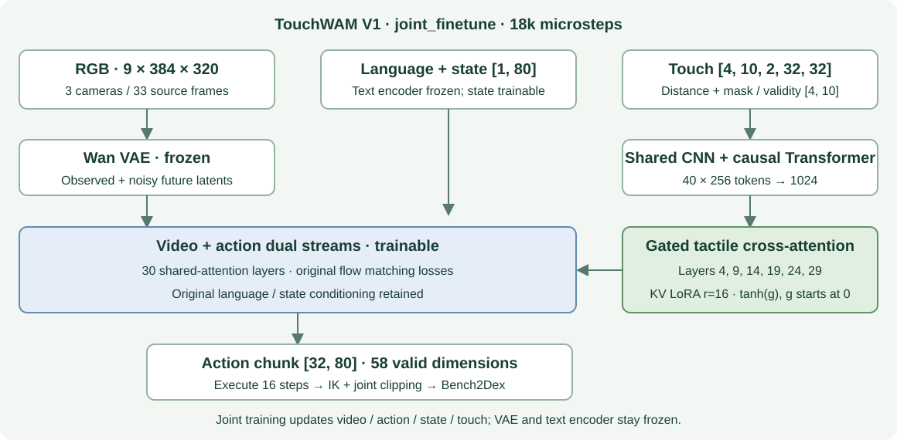

已有完整闭环，触觉收益仍需验证
4090 已能运行 Bench2Dex 仿真与真实 TouchWAM 推理。联合训练 18k checkpoint 在三个任务上完成 150 回合，成功 50 回合（33.33%）；同为 11k 时 TouchWAM 为 29.33%，低于无触觉基线的 32.00%。现有结果不足以证明触觉带来稳定提升。
| 模型 / 训练 microsteps | 26 罐头摆盘 | 32 烤盘准备 | 73 完整拼图 | 三任务平均 | 状态 / 证据 |
|---|---|---|---|---|---|
| OpenWAM 基线 · 11k | 26/50 · 52% | 20/50 · 40% | 2/50 · 4% | 32.00% | 150/150 · 完整 原始结果 |
| TouchWAM 联合训练 · 11k | 24/50 · 48% | 17/50 · 34% | 3/50 · 6% | 29.33% | 150/150 · 完整 原始结果 |
| TouchWAM 联合训练 · 18k | 22/50 · 44% | 23/50 · 46% | 5/50 · 10% | 33.33% | 150/150 · 完整 原始结果 |
所有完整结果均为 none profile、每任务固定 50 个初始化、20 Hz 控制 / 60 Hz 物理；稳定成功条件保持 0.5 s 后提前结束。上限为 871 / 852 / 1213 控制步。模型执行 16 步后重新规划，动作 chunk 32 步、10 次去噪，采用修复后的相同 IK 适配方式。
18k 相对 11k 基线仅高 1.33 个百分点，训练预算不同；11k 对照低 2.67 个百分点。未做触觉置零/打乱消融与多随机种子显著性检验。此处不是论文四种扰动的平均 SR，也不是独立未见场景成功率。
样本划分、区间及约束诊断
任务 26 / 32 / 73 的训练组初始化分别为 45 / 14 / 38 个，验证组 5 / 2 / 4 个，未用于训练/验证的组 0 / 34 / 8 个。评测场景与训练存在重合。18k 的分任务 Wilson 95% 区间为 31.16–57.69%、32.97–59.60%、4.35–21.36%。
18k 关节约束诊断违规回合数为 49/50、50/50、50/50；IK 不可解目标计数均为 0，IK 投影目标数为 8,830 / 33,637 / 3,353。stable success 不等于 safe success，不能因任务完成忽略轨迹质量。
训练动作标签来自 FK(commanded)，部分原始肘关节命令越物理限位。当前 IK 先在训练命令范围反解再裁剪到物理限位；修复前 3 个回合已排除。详情：协议与 IK 修复说明（历史文档）。
早期 adapter-only 6k：仅 92/150 回合，成功 28，因预定关机中断，不并入完整比较；原始结果。Task86 单任务历史评测为 17/50（34%），任务与训练不同，另见历史报告。
18k checkpoint：成功与失败都保留
每个任务取视频索引中首个成功和首个失败回合，没有按画面效果挑选。三路画面依次为 stereo_left、wrist_left、wrist_right。6.67 FPS 对应仿真时间，不代表实际推理墙钟速度；低分辨率来自原始录制。
录像来源、回合与标记 · 全部 150 个录像索引。成功标记来自评测器，单个 demo 不能代表整体能力。
模型架构：保留双流主干，增加触觉条件

保留 Wan VAE、视频/动作双流、30 层 shared attention 和原始 flow-matching 目标。训练 RGB 为 9 帧 384×320 三相机拼图，来自 33 个源帧、stride 4；state 为 [1,80]，输出 action 为 [32,80]，有效动作维度 58。
触觉输入 [4,10,2,32,32]：4 个历史时刻、左右各 5 个指尖、距离与接触掩码两通道。共享 CNN 加 2 层因果时序 Transformer，携带手/手指/时间标识，生成 40×256 token，再投影到 1024 维。第 [4,9,14,19,24,29] 层动作分支增加并行触觉 cross-attention，KV 的 LoRA rank 16，逐层 tanh(g) 零初始化门控。
h′ = h + CA_original(norm(h), C) + tanh(g) · CA_tactile(norm(h), Z_touch)，再进入原 FFN。触觉扩展约 2,800,806 参数；该数是新增参数，不是 joint_finetune 的全部可训练参数。没有第三个大型 DiT、触觉 VAE 或未来触觉生成任务。
传感器为几何射线距离/接触代理，不是标定力值；240×240 图压到 32×32，距离按 0.015 m 缩放。[4,10] validity 与“无接触”分开处理。实时观测每 20 Hz 更新，动作 chunk 执行期间也累计触觉，回合切换清空历史；缺失有效传感器会报错。
训练数据与边界
| Bench2Dex / 双 IIWA7 + Sharpa | 轨迹 | 训练 / 验证 | 原始训练窗口 |
|---|---|---|---|
| 26 罐头摆盘 | 100 | 90 / 10 | 54,730 |
| 32 烤盘准备 | 32 | 28 / 4 | 16,238 |
| 73 完整四块拼图 | 84 | 76 / 8 | 60,834 |
| 合计 | 216 | 194 / 22 | 131,802；均衡采样后每虚拟 epoch 182,502 |
300 条原始回放经过离线终态检查后保留 216 条。main 和同编号 _1 分到同一组，97 个训练组 / 11 个验证组，seed 42。每任务每虚拟 epoch 采 60,834 窗口，三任务等权。homing 后片段和时间断点不可跨越。
已审计 159,290 个原始帧；float32 触觉缓存约 12.2 GiB，不重复存 RGB。训练端 manifest 位于 assets/benchmark_data/bench2dex_sharpa3_alpha/manifest.json，触觉缓存位于 assets/benchmark_data/bench2dex_sharpa3_tactile_v1/（训练服务器路径，不能假定本机有完整训练集）。
原始文件有 scripted_hold / demo_eligible=false 等标签，旧 success 标签与当前标准不一致，故使用离线终态过滤。过滤不是策略成功率；保留数据中任务安全违规轨迹数 2 / 8 / 2。需在后续训练中单独分析数据质量。
训练配置与实际记录
| 训练 / 部署机器 | 训练方案为 8×A100 80GB；本地训练核验记录确认 8 ranks，未附 GPU 型号遥测。评测在 RTX 4090，文本编码器放 CPU，关闭视频解码和 torch.compile。 |
|---|---|
| 初始化 | 官方 Alpha step154000，重新初始化 optimizer 与微调计数；不是从 Bench2Dex baseline 继续。源 SHA256 180a02653118b0f96da28a9cae9ec7b4c1c1e6cd0e4608b56c7b4884f8001d3d。 |
| 共同设置 | batch 16/GPU ×8，累积 2，有效 batch 256；LR 1e-5 constant；Adam β=(0.9,0.95)，weight decay 0.01，grad clip 1；BF16 / ZeRO2 / gradient checkpointing；seed 42。 |
| 实际 checkpoint | 11,000 microsteps / 5,500 updates；18,000 microsteps / 9,000 updates。18k 末条日志 epoch=12（零起始字段）。每 1k 存权重，不保存 optimizer 全状态；warm-start 不是精确断点续训。 |
| 实际训练耗时 | 本机未保存完整起止训练日志，无法给出净训练墙钟。源 run 名时间 2026-10-05 09:26:29 至 18k 导出 2026-10-06 22:56:20（+08:00）间隔约 37h30m，包含未知启动/保存/导出开销，不能视为净训练时长。 |
| 可验证运行速度 / 损失 | 18k 末条 rank7：0.1460 microstep/s（约 6.85s/microstep），total loss 0.05383、video 0.05212、action 0.001712；reserved 56.875 GiB/rank。只有末条指标，无完整本地曲线；训练 loss 不替代评测。 |
| 早期 adapter-only | 从三任务 baseline step13000 初始化，原主干冻结；6k microsteps、LR 1e-4 cosine、warmup 5%。不能和官方 Alpha 联合训练按同一预算直接比较。 |
实际导出配置 · 18k 末条训练指标与导出信息 · 8-rank 启动核验 / 38 项测试记录（均为历史产物，本轮未重跑）。
已测权重 SHA256 与本地位置
| OpenWAM 基线 · 11k | e6c774b0e747dc3447c5a4e170795edc5393c62080b06632b140f6db10958298 |
| TouchWAM 联合训练 · 11k | bdf654b8852cb5fa0b668586c06f6e9e7f902b0d3f86ce39a0b842177b402b86 |
| TouchWAM 联合训练 · 18k | cb3a3f876b6cded9b255cef9a0b116e4eb216c95b2547495a17955c6a47e40c1 |
| TouchWAM adapter-only · 6k | 84960951e4baecec2746813ac56a56f83a438a61b4559cf0bce11a9a681fc6ed |
本地目录：OpenWAM/outputs/bench2dex_sharpa3_touchwam_v1_from_alpha_step18000_export/，完整导出约 24.82 GB，包含配置、统计、tokenizer、URDF 和关节映射。哈希来源为既有导出/评测记录，本轮没有重新读取全部权重计算哈希。
复现入口与下一步
使用 README：启动场景、训练、4090 评测、停止进程 · 环境安装与兼容性说明
代码：Bench2Dex 3733fac；OpenWAM f9f9359d。初次环境验证（2026-09-30）：bench2dex Python3.11 / Torch2.7.0+cu128 / IsaacSim5.1 / IsaacLab2.3.2；openwam Python3.11 / Torch2.7.1+cu128。物理 45 步、RGB (1,128,128,3)，OpenWAM BF16 小模型前向和 63 项测试通过。该历史检查不等于最新完整模型重新验证。
调研入口：9/28 全景调研 HTML、PDF；9/29 FTP-1 公开包审计。调研事实以各自日期为准，尚未执行人类视触觉预训练或真机迁移。
- 补齐同预算无触觉基线与触觉置零/打乱消融，按训练/验证/未见初始化分别比较，再增加扰动 profile 和种子。
- 检查原始关节命令越限及 task73 低成功率，修正数据/动作接口后重训；新结果发布 v002，保留本报告。
报告中的 JSON、配置、六段录像是 v001 快照；指向原始目录的链接用于进一步排查，可能随项目后续工作变化。